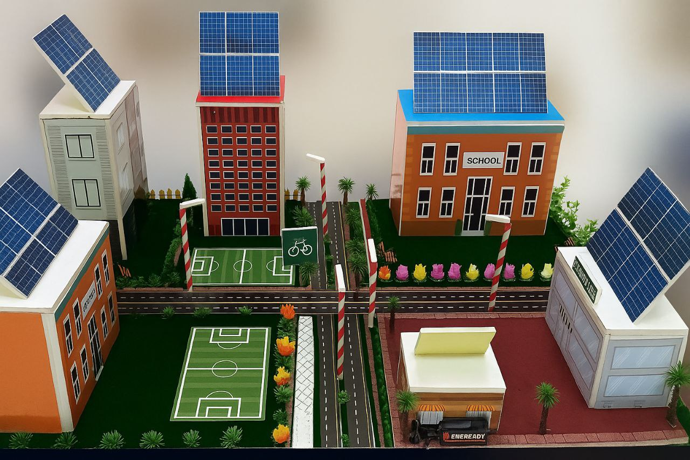
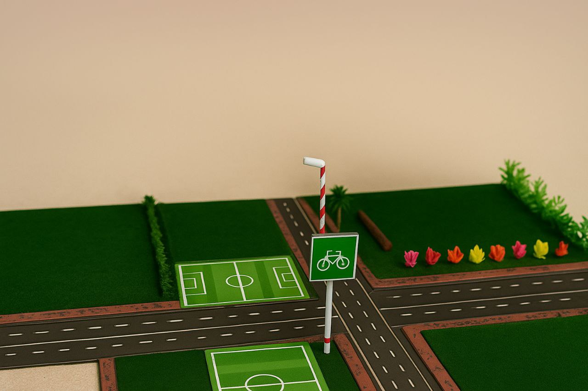
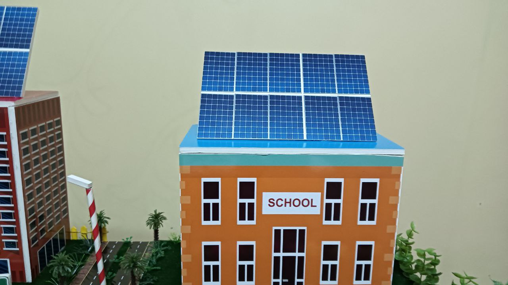
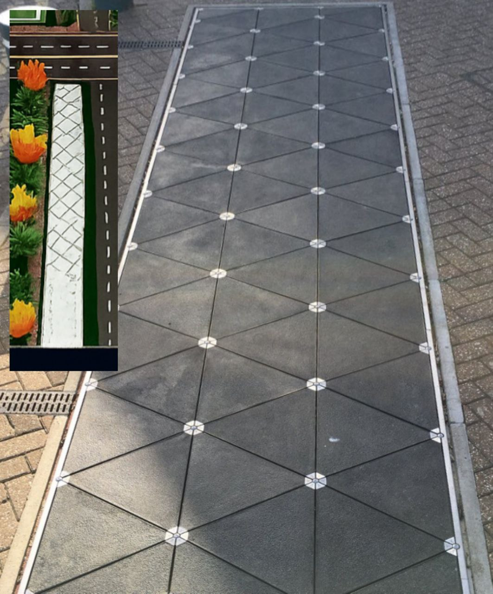
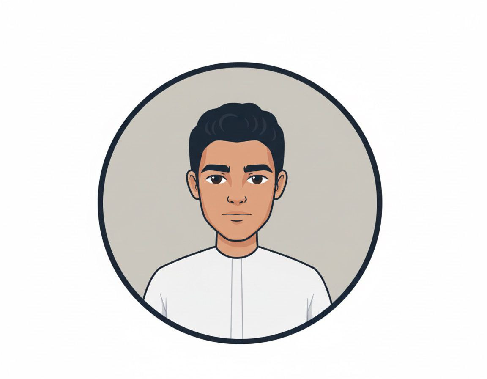
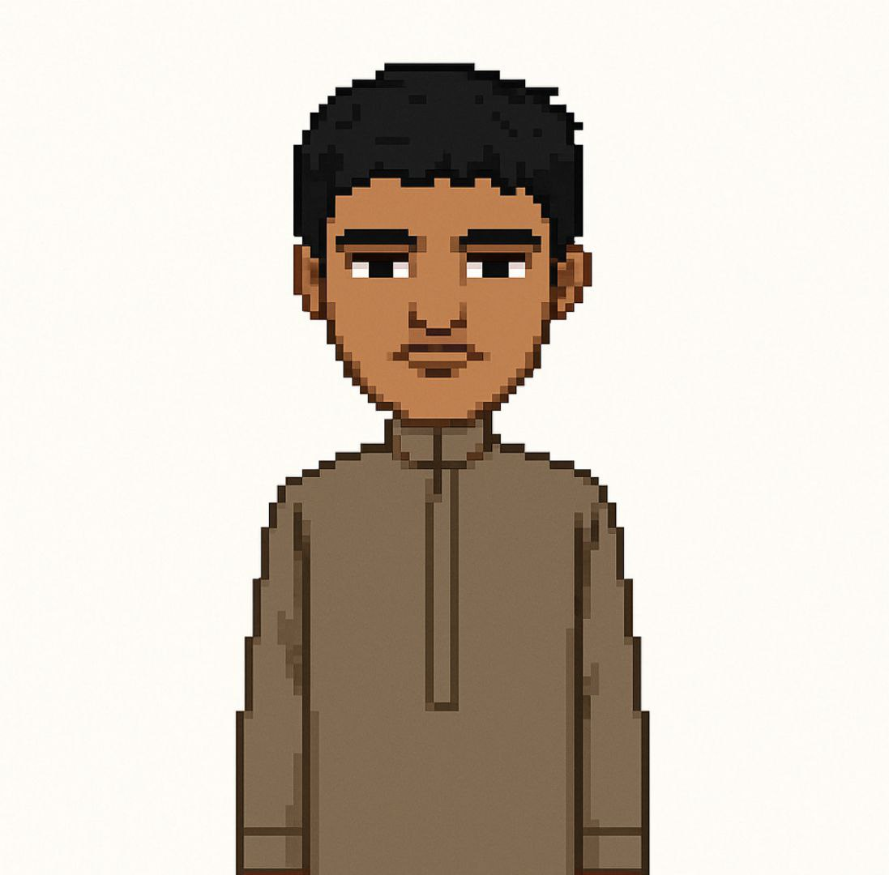

A car-free, solar-powered neighborhood of the future
A student-designed model of a small sustainable city — two schools and a central market within walking distance, naturally ventilated homes, and streets that generate their own electricity.

Project overview
A city designed around people, not cars
Everything is close, quiet and clean — the layout itself does most of the work.
The Future City is a small model city planned to be eco-friendly and comfortable. It contains modern houses, two schools and one central supermarket serving all residents — every daily destination is within walking or cycling distance.
Because nothing depends on cars, the city is quieter, safer and far less polluted. Homes and streets are spaced to let air flow naturally between buildings, with openings in each house that keep air circulating — cooling interiors without constant air-conditioning.
Energy comes from the city itself: rooftop solar panels generate clean daytime power, while piezoelectric floor tiles in sidewalks convert the pressure of footsteps into electricity for street lighting and signals. It is not just a place to live — it is a working model of a smarter, cleaner future.
Design pillars
Three ideas hold the whole city together
Energy, mobility and housing were designed as one system, not three separate problems.
Clean energy, generated on site
Rooftop solar panels power homes from sunlight, supported by footstep-energy tiles that light the streets at night.
Car-free, walkable mobility
Schools, shops and homes sit close together, so walking and cycling replace cars — cutting emissions and noise.
Buildings that breathe
Street orientation and wall openings channel natural airflow through every home, reducing the need for cooling.
Innovation spotlight
How the city powers itself
Two complementary renewable systems — one for rooftops, one for the streets people walk every day.
Solar panels on every home
Each rooftop carries photovoltaic panels that convert sunlight directly into household electricity — the city's primary power source and the reason it can aim for full renewable independence.
Piezoelectric walkways
Special floor tiles under sidewalks turn the pressure of every footstep into small electric charges. Collected across thousands of steps, this energy powers streetlights and traffic signals.
Design highlights
From model to systems
Key views of the physical model and the technologies inside it.
1. Realistic physical model
A detailed scale model showing homes, streets and shared facilities.

2. Walkable street layout
Short, connected routes designed for pedestrians and bicycles.

3. Solar-powered lighting
Rooftop panels feeding clean electricity into homes and lights.

4. Footstep-energy tiles
Piezoelectric tiles converting footsteps into street power.
Impact
Why it matters
The design pays off in health, environment and learning at the same time.
- Better daily lifeQuiet streets, short walks, cleaner air.
- Protected environmentRenewables instead of fossil fuel.
- Less pollution & noiseNo inner-city car traffic.
- Hands-on innovationStudents building real systems.
Team
Meet the team
Five students — model building, research and web presentation.

S'"> Saeed Hamad Model Design & Build
M'"> Mohammed Khaled Concept & energy researchFor reviewers